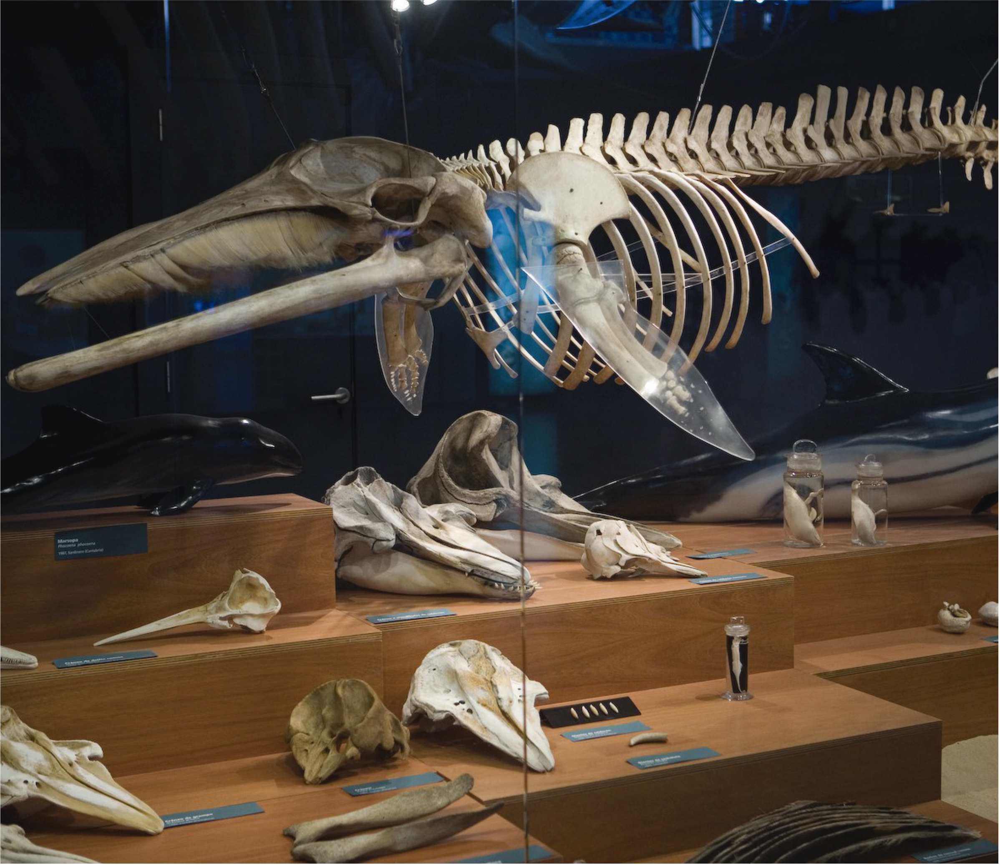
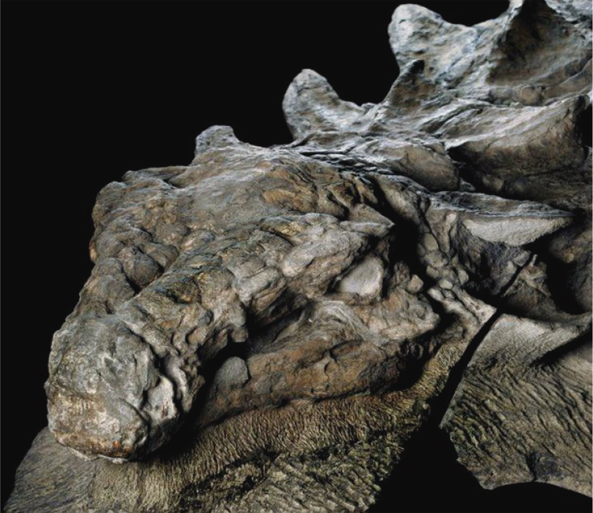
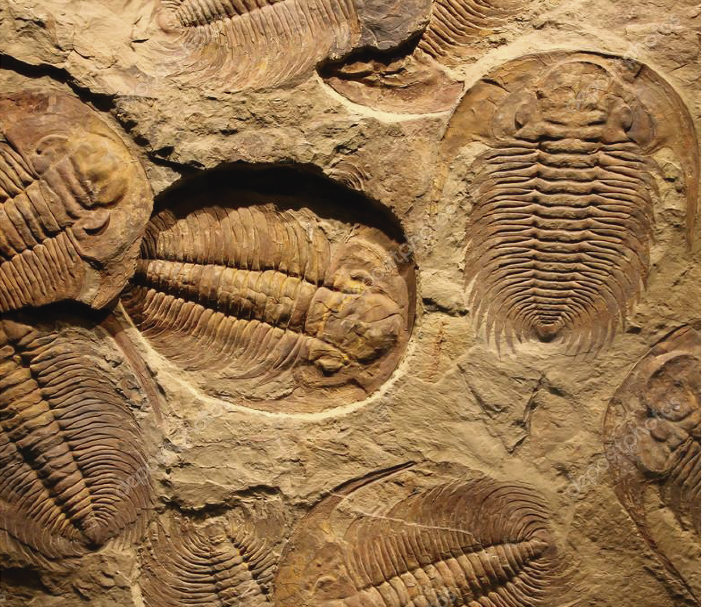
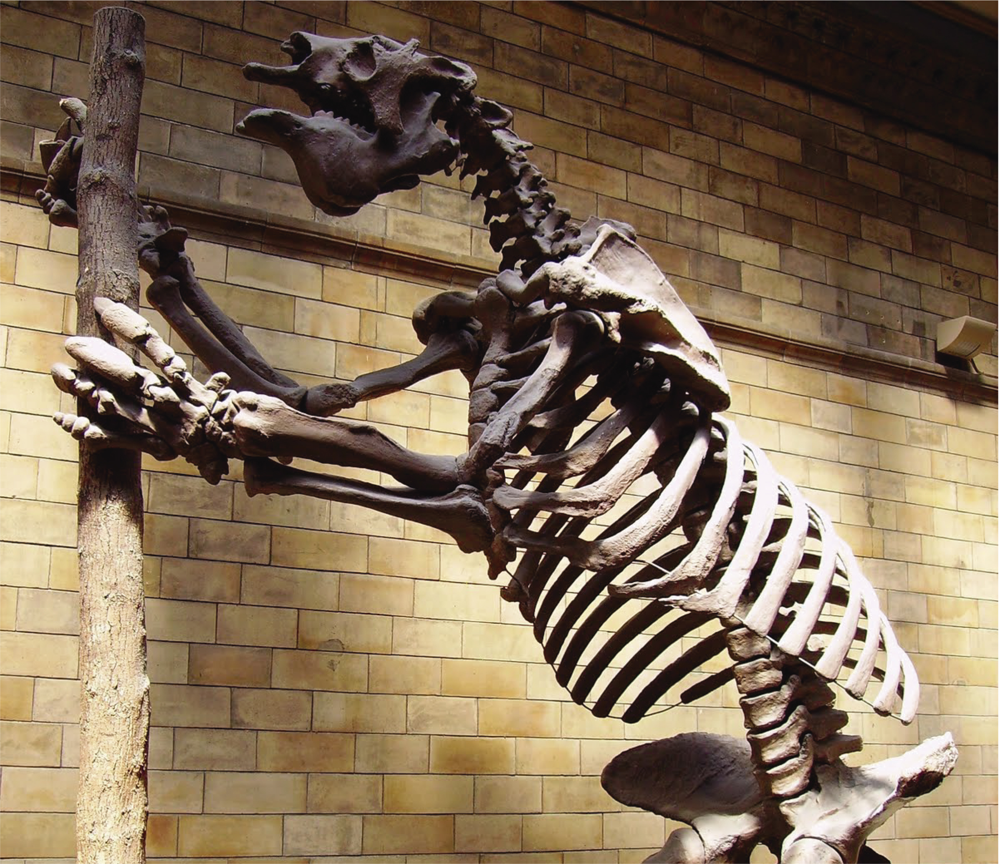

What are fossils?
A fossil is any preserved remains, impression, or trace of any once-living thing from a past geological age.....
MoreWelcome to Paleo-Replic
We have a huge selection of legally-obtained Native American Artifacts and Pleistocene fossils from all America including many Mastodon and Mammoth teeth, some jaws, a few unique world class fossils found nowhere else, Tapir, Horse, Giant Beaver, Giant Armadillo, Camel, Dire Wolf, Short Faced Bear, Black Bear, Saber Cat, Lion, Giant Ground Sloth, Alligator,bulk fossils and the amazing dinosaurs.
Types
Mamals
Amphibians
Carcharodon Megalodon
There are many processes that lead to fossilization, including permineralization, casts and molds, authigenic mineralization, replacement and recrystallization, adpression, carbonization, and bioimmuration.

Whale

Anquilosaurio

croustaceos
